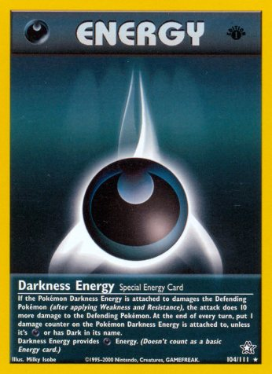
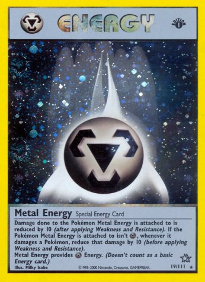

So the neo era was very different then base.
Imposter Oak’s Revenge, Rocket’s Sneak Attack and The Rocket’s Trap were great to cripple your opponents hand, and if you had lost the openning coin flip consider yourself lucky if you have any cards in your hand. if that happend to you, you would have no more that one or two turns to draw something usefull or the game will end quite fast. this was quite common thing throughout 2000, as players one dissapointing game after another one. then Neo Genesis cam eyou at the end of 2000 players breathed a collective sigh of relief. it had 111 cards, the first to feture pokemon from from Gold and Silver and a lot of great cards. and one of 'em was getting alot of attention:
Behold, the 30 HP pokemon that could save the game! fillaly players could say "no u." To hand dissruption, cause the name of the geame is "recource management" (well, its the "pokemon: tcg". Now any player thats lucky enough for a single Energy saying "nope" to to Rocket’s Sneak Attack and Rocket’s Trap there opponent played.
Cleffa puts brakes on try-to-defeat-your-opponent-faster-than-a-zeroa-that-thad-his-pizza-rolls-stolen or try-to-make-your-opponent-have-no-cards strategies thad had tooken over the game before. while cleffa has 30 HP it had built-in defence against agressive starts: the baby rule; baby pokemon introduced it gold and silver and brought in to the tcg with neo genesis, functioned like basic (and still counted as one) but they offered an aditional benifitL whenever your opponent attacked a baby pokemon they would have to flip a coin; if tails, their turn endeds with out an attack.
Cleffa revolutionized the game. it let players rely less on prof Oak. and preserve cards by shuffling cards into your deck and not discarding it, (and more recources are better than none).
Ironicly, Cleffa's greatest asset was that is weakend the streanghth of hand-disrupion combos that the game was based off. Cleffa was combined with Lass, allowing players to deliver one-sided hand disruption that mimicked the hand disruption players used before. The idea was to play Lass and immediately recover a fresh hand with Eeeeeeek. Meanwhile your opponent would be left with a (usually small) Trainer-less hand. This strategy was very strong on the first turn of the game, especially if your opponent did not themself start with cleffa. Very fast to realize how powerful this combo was, players began adding 4 Cleffas to there deck. Their odds of both executing and surviveing it.
No doubt the best card from the Neo Era. in fact, the inpact on the game, it's not hard to argue that cleffa remains the best pokemon card of all time, relitiv eto itd time. But more game breacking came in the Neo era.
Sneasel was a great card (it was so good it was banned) Sneasel's atttack was very good, Beat Up; 20 damage times how much pokemon are on your bench, to a good attack so lets say you have 4 pokemon on your bench and you use Sneasel's Beat Up so you do 80 damage, it makes sense, but it should do more! (yes, with 4 pokemon on your bench).
Let me introduce to you


darkness and metal energy, neo era
Now, Darkness and Metal Energy have abilitys, as in Darkness Energy adds 10 more damage after attacking and Metal Energy reduced damage by 10 after attacking. The buff's can stack so if a pokemon had two Darkness Energy attached to it, it would do 20 more damage, and if a pokemon had 2 Metal Energy it would subtrack the attack by there opponent by 20 damage. So, how could this be good?
Now? remember Sneasel? yeah, with my example 4 pokemon on your bench, 80 damage. but add the Darkness Energy boost, with 2 Darkness Energy thats 100 damage!! Like more than most pokemon (also, the 120 mark wan't broken in this set. so there must be some deck around him (like, he revelutionived the format so, yeah).
*instert deck here*
hey, heads up, this part is a work in progress, hope you dont find this anoying ^^